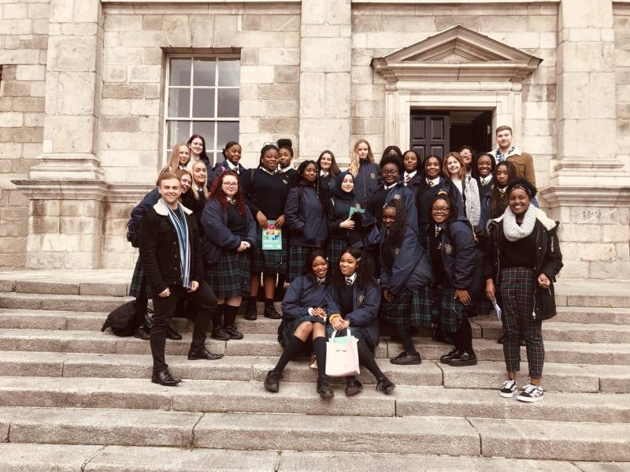

Since starting my First Year in Trinity College Dublin, I have been an Access Ambassador for Trinity Access. As a Trinity Access Ambassador I spread awareness about the different routes of becoming a college student. I achieve this through leading campus tours, visiting schools, giving presentations and interacting with Secondary School Students. As a first-generation college student, I understand the barriers many of these secondary school students are facing. Through spreading awareness about different paths into College and by speaking about my own experience I hope to inspire and motivate students to continue on to third level education.

Multiple times I have been able to visit my own secondary school, Coláiste Bríde, or interact with the Coláiste Bríde students in Trinity. It reminds me of times when I was in 6th year and listened to College Students speak about college.
It is just like a full circle moment, in which I am able to give back to my community and continue to show students that College can be for everyone and not just for selected few.

Through volunteering at Trinity Access I have:
- Improved my public speaking skills.
- Presented in front of many secondary school students.
- Led Trinity Campus Tours.
- Inspired the young generation to continue to study.
- Visited Schools to talk about College Awareness.
- Gave back to my Community.